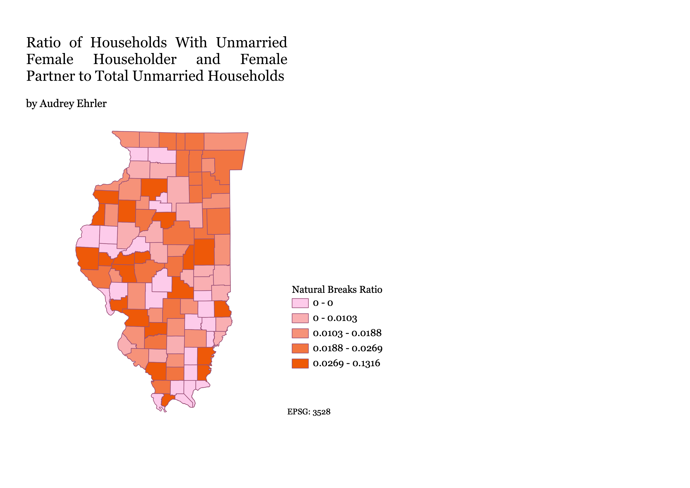
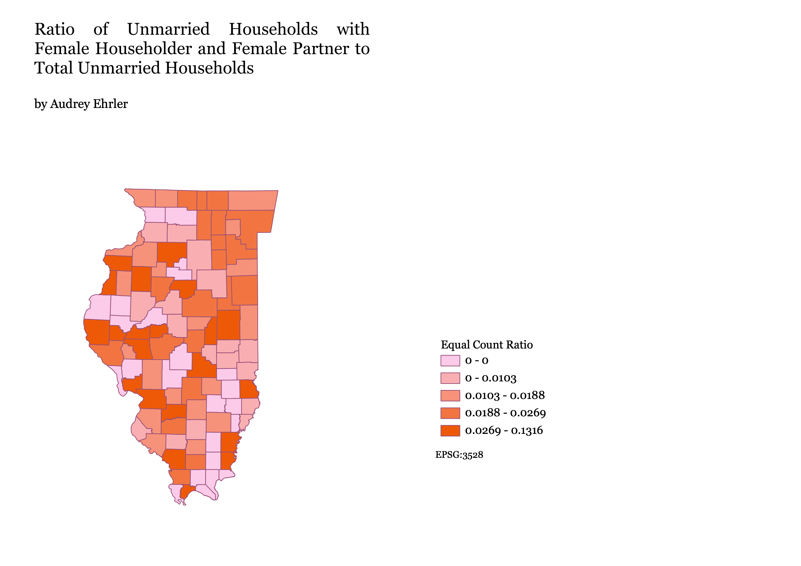
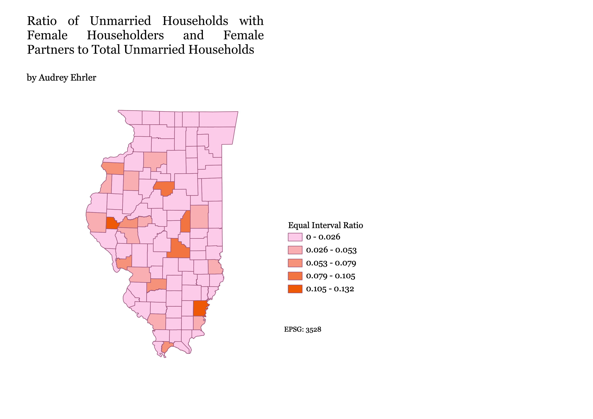

This is a natural breaks ratio scheme, which separates the data into natural categories. This makes it easy to see class variation,
but not so much variation within classes.
This kind of scheme is not useful for datasets with low variance.

This is an equal count ratio scheme. This kind of chloropleth is based on order, not value. It allows us to compare chunks
by seeing the same number of categories in each class,
but it is difficult to see clusters and variation within the classes.

This is an equal interval ratio scheme. This data set is easy to read, but also does not
show the variance in smaller values.